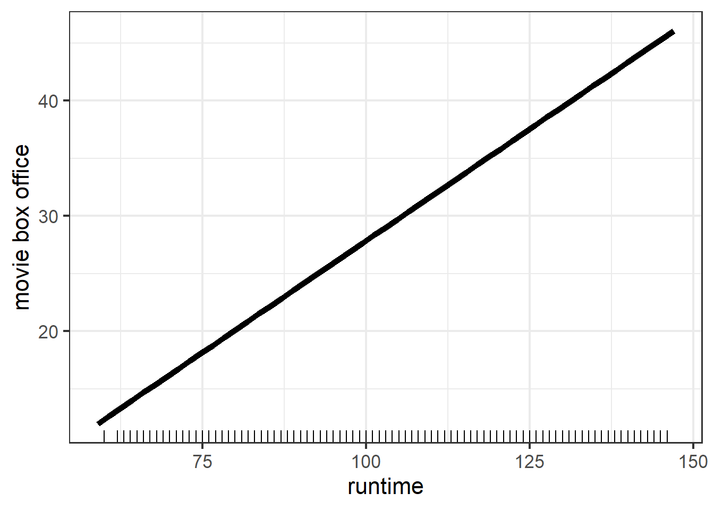

Chapter 3 Linear Regression
3.1 Fit Model
3.1.1 Model Summary
##
## Call:
## lm(formula = gross ~ year + certificate + runtime + genre + rating,
## data = train_dat)
##
## Residuals:
## Min 1Q Median 3Q Max
## -295.30 -25.91 -7.31 13.12 830.12
##
## Coefficients:
## Estimate Std. Error t value Pr(>|t|)
## (Intercept) -120.21244 54.35819 -2.211 0.027016 *
## year1914 21.81797 60.66068 0.360 0.719097
## year1915 19.50822 60.64788 0.322 0.747712
## year1916 -30.16239 62.64415 -0.481 0.630176
## year1917 11.70554 61.07554 0.192 0.848013
## year1918 21.77507 66.46347 0.328 0.743200
## year1920 -3.09190 66.44300 -0.047 0.962885
## year1921 -25.14191 57.18855 -0.440 0.660209
## year1922 7.27642 55.92548 0.130 0.896482
## year1923 -10.81645 55.82472 -0.194 0.846368
## year1924 -21.10937 55.25807 -0.382 0.702456
## year1925 -9.35677 55.46363 -0.169 0.866034
## year1926 -17.12813 55.20711 -0.310 0.756373
## year1927 -14.59860 55.12251 -0.265 0.791137
## year1928 -20.85300 58.59985 -0.356 0.721954
## year1929 -8.92249 56.48237 -0.158 0.874483
## year1930 -9.77738 56.03171 -0.174 0.861477
## year1931 -19.91362 57.16929 -0.348 0.727599
## year1932 -14.84490 55.58707 -0.267 0.789429
## year1933 -6.22247 56.03838 -0.111 0.911586
## year1934 -9.74593 56.90417 -0.171 0.864014
## year1935 -21.81367 57.54411 -0.379 0.704635
## year1936 -11.77056 56.90158 -0.207 0.836123
## year1937 42.44672 56.15101 0.756 0.449697
## year1938 -30.04404 57.53829 -0.522 0.601568
## year1939 -17.72523 54.93811 -0.323 0.746972
## year1940 -17.64602 55.32981 -0.319 0.749788
## year1941 -21.64091 55.52255 -0.390 0.696713
## year1942 -14.71033 55.09430 -0.267 0.789470
## year1943 -3.81440 56.67667 -0.067 0.946343
## year1944 -17.06934 56.13977 -0.304 0.761093
## year1945 -4.54327 57.96989 -0.078 0.937532
## year1946 -14.23288 55.45769 -0.257 0.797457
## year1947 -9.36129 55.65378 -0.168 0.866423
## year1948 -16.83511 55.83187 -0.302 0.763012
## year1949 -16.58324 57.18432 -0.290 0.771823
## year1950 1.86317 55.91450 0.033 0.973418
## year1951 -29.10629 55.93679 -0.520 0.602832
## year1952 -19.86908 55.91867 -0.355 0.722354
## year1953 9.81371 55.73363 0.176 0.860231
## year1954 -15.11584 54.78137 -0.276 0.782605
## year1955 -11.75886 55.47774 -0.212 0.832144
## year1956 -25.74408 55.73971 -0.462 0.644186
## year1957 -12.35089 55.31734 -0.223 0.823326
## year1958 -26.83331 55.65458 -0.482 0.629713
## year1959 -14.21580 54.99793 -0.258 0.796041
## year1960 -11.74289 54.98280 -0.214 0.830882
## year1961 1.83519 55.32606 0.033 0.973539
## year1962 -33.82941 55.25549 -0.612 0.540390
## year1963 -19.24221 54.81366 -0.351 0.725557
## year1964 -18.20523 54.85056 -0.332 0.739964
## year1965 -7.93468 54.92975 -0.144 0.885146
## year1966 -21.65961 55.58975 -0.390 0.696813
## year1967 -5.93036 55.04621 -0.108 0.914208
## year1968 -15.06788 55.14686 -0.273 0.784678
## year1969 -28.13156 54.80169 -0.513 0.607725
## year1970 -23.10140 54.50019 -0.424 0.671661
## year1971 -22.02269 54.53256 -0.404 0.686332
## year1972 -34.29530 54.45863 -0.630 0.528867
## year1973 -33.20227 54.47727 -0.609 0.542221
## year1974 -33.85036 54.45950 -0.622 0.534233
## year1975 -22.38263 54.68181 -0.409 0.682307
## year1976 -22.67878 54.88289 -0.413 0.679450
## year1977 -15.28429 54.72027 -0.279 0.780005
## year1978 -16.43556 54.72380 -0.300 0.763924
## year1979 -19.47260 54.70876 -0.356 0.721896
## year1980 -8.58997 54.55490 -0.157 0.874888
## year1981 -14.10976 54.46931 -0.259 0.795607
## year1982 -16.56371 54.45440 -0.304 0.760998
## year1983 -12.19302 54.44914 -0.224 0.822811
## year1984 -16.59718 54.42273 -0.305 0.760395
## year1985 -27.08100 54.38909 -0.498 0.618552
## year1986 -15.88751 54.36573 -0.292 0.770111
## year1987 -18.10011 54.35394 -0.333 0.739135
## year1988 -13.90428 54.35490 -0.256 0.798104
## year1989 -10.66204 54.36355 -0.196 0.844515
## year1990 -7.82602 54.36007 -0.144 0.885529
## year1991 -8.94508 54.37569 -0.165 0.869335
## year1992 -5.59718 54.35718 -0.103 0.917988
## year1993 -7.95428 54.36160 -0.146 0.883669
## year1994 -10.07551 54.34893 -0.185 0.852929
## year1995 -7.27961 54.34619 -0.134 0.893445
## year1996 -5.30318 54.34546 -0.098 0.922265
## year1997 -7.37382 54.33127 -0.136 0.892045
## year1998 -2.35611 54.33159 -0.043 0.965411
## year1999 6.25248 54.34254 0.115 0.908401
## year2000 -2.17594 54.32491 -0.040 0.968050
## year2001 -3.01000 54.32861 -0.055 0.955818
## year2002 0.13465 54.32269 0.002 0.998022
## year2003 0.07259 54.33125 0.001 0.998934
## year2004 -4.32085 54.32424 -0.080 0.936606
## year2005 1.23536 54.32180 0.023 0.981857
## year2006 -3.68250 54.31620 -0.068 0.945948
## year2007 -0.21512 54.31481 -0.004 0.996840
## year2008 0.49141 54.31782 0.009 0.992782
## year2009 -0.57034 54.32058 -0.010 0.991623
## year2010 7.38048 54.32206 0.136 0.891929
## year2011 1.26108 54.32096 0.023 0.981479
## year2012 3.46848 54.32303 0.064 0.949091
## year2013 1.23753 54.31414 0.023 0.981822
## year2014 -0.33808 54.31343 -0.006 0.995034
## year2015 -0.72149 54.31382 -0.013 0.989402
## year2016 0.62123 54.30969 0.011 0.990874
## year2017 5.80182 54.30660 0.107 0.914922
## year2018 -1.51075 54.30758 -0.028 0.977807
## year2019 21.53249 54.34443 0.396 0.691946
## year2020 -14.34845 54.64520 -0.263 0.792882
## year2021 21.55288 54.52547 0.395 0.692641
## year2022 40.65133 56.04659 0.725 0.468270
## certificateOther 23.17051 1.90747 12.147 < 2e-16 ***
## certificatePG 58.77324 1.86031 31.593 < 2e-16 ***
## certificatePG-13 61.97718 1.70025 36.452 < 2e-16 ***
## certificateR 25.75499 1.59208 16.177 < 2e-16 ***
## runtime 0.39365 0.02105 18.702 < 2e-16 ***
## genreAdult -10.98507 31.36537 -0.350 0.726171
## genreAdventure -9.61763 1.72239 -5.584 2.39e-08 ***
## genreAnimation 13.25524 1.82569 7.260 4.03e-13 ***
## genreBiography -39.29507 3.00102 -13.094 < 2e-16 ***
## genreComedy -21.53476 1.30407 -16.514 < 2e-16 ***
## genreCrime -22.68721 1.54971 -14.640 < 2e-16 ***
## genreDrama -29.68656 1.37094 -21.654 < 2e-16 ***
## genreFamily -19.68815 9.32770 -2.111 0.034811 *
## genreFantasy -7.32926 4.68987 -1.563 0.118122
## genreFilm-Noir -40.39814 28.60395 -1.412 0.157872
## genreHistory -27.70580 28.28755 -0.979 0.327380
## genreHorror -0.46708 2.11403 -0.221 0.825141
## genreMusic -22.36235 54.33817 -0.412 0.680682
## genreMusical -15.12664 16.64664 -0.909 0.363527
## genreMystery -24.22361 6.30639 -3.841 0.000123 ***
## genreRomance -38.43141 8.78622 -4.374 1.23e-05 ***
## genreSci-Fi -27.53180 20.56941 -1.338 0.180757
## genreThriller -13.33323 7.31328 -1.823 0.068298 .
## genreWar -48.98467 54.30228 -0.902 0.367031
## rating 14.25298 0.45707 31.184 < 2e-16 ***
## ---
## Signif. codes: 0 '***' 0.001 '**' 0.01 '*' 0.05 '.' 0.1 ' ' 1
##
## Residual standard error: 54.23 on 16693 degrees of freedom
## Multiple R-squared: 0.2641, Adjusted R-squared: 0.2583
## F-statistic: 45.05 on 133 and 16693 DF, p-value: < 2.2e-16We can read from the summary of the linear model that the R-squared of our model is only 0.2666, which indicates a bad fit. To further examine whether the linearity assumption is hold to some extent, we draw the residual plot as follow.
3.1.2 Check Linearity
From the Residual Plot, we can observe that majority points are lying in a line with negative slope. This might indicate that our model will over-estimate certain types movies’ box office and under-estimate some other types. That is, some common characteristics of data with high fitted value contributes a lot to its over all prediction and vice versa for data with low predicted value.
Also note that we have negative fitted value, which obviously
does not make sense. By checking the dataset, we have not negative value in gross variable. This excludes that negative fitted values come from dataset. Hence, this is another factor supporting that a linear model might not be appropriate.
3.2 Partial Dependence Plot
Next, we want to explore the marginal effect of rating, runtime, certificate, and genre on predicted value.


From the PDP plot of rating and rutime, we can see that both variables have positive marginal effect on gross. However, note the range of movie box office in two figures are different, rating results in a larger variation in terms of predicted value. This suggests that rating could explain more variation of movie box office. Therefore, rating should be a more important feature compared with runtime. And this is consistent with our intuition.

The PDP of certificate shows that PG-13 and PG movies tend to have more box office while Not Rated movies tend to have less box office, this is consistent with the results in scatter plot of box office Vs certificate.

The PDP of genre shows that animation, action, and horror movies are top three most popular types while war, film-noir, and biography are the three types with least audience.
3.3 Local Interpretable Modelagnostic Explanations (LIME)
Because of the high interpretability of linear model, LIME features plots seem to be redundant. But I want to see whether the results obtained from local interpretable model is consistent with the global linear model.
| model_intercept | model_prediction | feature | feature_value | feature_weight | feature_desc | prediction |
|---|---|---|---|---|---|---|
| 95.999 | 49.821 | year | 92 | 1.893 | year = 1996 | 43.888 |
| 95.999 | 49.821 | certificate | 3 | 28.437 | certificate = PG | 43.888 |
| 95.999 | 49.821 | runtime | 100 | -60.749 | runtime <= 232 | 43.888 |
| 95.999 | 49.821 | genre | 1 | 15.956 | genre = Action | 43.888 |
| 95.999 | 49.821 | rating | 5 | -31.714 | 3.27 < rating <= 5.25 | 43.888 |
From the explanation table, we have that the local model is
\(\hat{y}_{lime} = 96.832 +3.062 \cdot \mathbf{1}_{5.25 < rating <= 7.22}+27.339 \cdot \mathbf{1}_{certificate = PG}+29.846 \cdot \mathbf{1}_{genre = Animation}-62.226 \cdot \mathbf{1}_{runtime <= 232}+0.789 \cdot \mathbf{1}_{year = 2003}\)
And note that in our original model, the coefficient of certificatePG is 59.056, the coefficient of genreAnimation is 15.639, the coefficient of year2003 is
-0.939, the coefficient of rating is 14.041, and the coefficient of runtime is 0.397. Thus, the local (linear) model is different from our original linear model from quantitative aspect.
However, from the LIME plot, we can observe that high rating value will have positive contribution to the prediction and low rating value will have negative contribution. And in terms of direction, the effect of certificate and genre are both consistent with results from original model. Hence from this respect, the local model has same output as original linear model.
## lime error originalerror
## 1 -24.42926 -32.47928
## 2 120.66825 103.59054
## 3 -74.52544 -53.97994
## 4 -16.07728 -30.15031The residual table shows that neither outperforms the other one. And both have pretty large errors.
3.3.1 Gower Distance

As Gower distance increases, the variance of difference between pairs increases. This indicates that for very different observations, our model sometimes makes different predictions and sometimes makes similar predictions, for very similar observations, our model tend to make similar predictions. From the figure, we can claim that for our linear model, if the Gower distance is less than 0.18, the prediction will be very similar (difference<25).